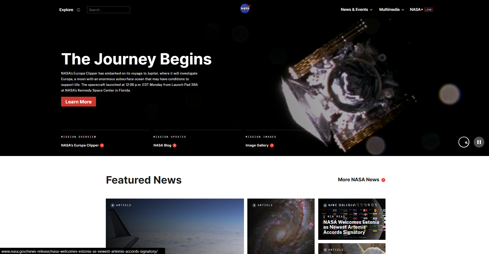

UI/UX Evaluation
- 1. What is the URL of the website?
-
- 2. What is the name of the website?
-
- The name of the website is NASA.
- This stands for The National Aeronautics and Space Administration.
- 3. Who is the site's target audience?
-
- The website's target audience includes students, educators, space enthusiasts, astronomers, researchers, the general public, and just about anyone who is interested in space exploration and scientific advancements in this field.
- 4. How is the site organized?
-
- The website is organized hierarchically.
- There is a clearly defined, well-organized home page, that includes navigation links to major sections such as the latest news, missions, and information about the organization.
- While the website may seem a bit shallow at first due to the number of options for space topics, it does implore deep structures, ensuring the site follows the "Three Click Rule".
- This allows visitors to access all of the content within a few clicks, so they are effectively navigated and not too overwhelmed when introduced to the site.
- 5. Which CRAP Design Principle does it use? Provide at least one example.
-
- The website uses the Contrast and Proximity Principles.
- For example, they use the contrast of alternating black and white boxes to separate the content, which improves readability and draws attention to key sections.
- They use proximity to group together related content within those boxes, creating an organized and pleasant viewing experience.
- 6. What is the Audit Score according to the Accessibility Checker?
-
- Despite its great design, the website has an audit score of 60%, which is not passing in terms of its accessibility.
- The main reason for this score seems to be that the site's content lacks descriptive texts, has empty elements, contains inefficient links, has improperly labeled fields, or has extraneous information.
- Most of this, however, is not noticeable and does not affect the UI/UX in the live product.
- 7. What is the site's effectiveness?
-
- The site provides comprehensive and detailed information and resources, which effectively aids users in finding and understanding space-related content easily.
- 8. What is the site's efficiency?
-
- The website allows users to traverse it quickly and efficiently due to its clear navigational tabs, its search function and wide catalog, and its convenient layout that minimizes the time needed to locate something within the site.
- 9. How is the engagement?
-
- The site is extremely engaging, as its space-related, high-quality pictures make it visually stunning.
- Additionally, it is a very interactive website because it provides viewers with many links, videos, and educational resources that encourage and engage people in the world of science and exploration.
- 10. My Recommendation for Improvement
-
- The NASA website is designed very well and there are not many recommendations I can make to improve the website.
- However, one design flaw that I notice is the randomness of the content on the homepage.
- It is still very organized, but the alignment and placement of the content can make it confusing to view for the reader, like the topics they are trying to view are all over the place.
- I would suggest a more streamlined and obvious experience in place of the visual or stylistic effect it may have.
Screenshot of the Website
